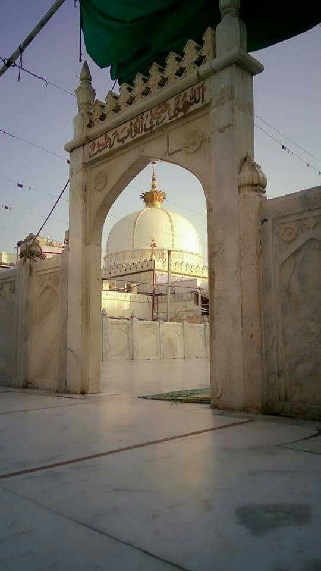

The path of enlightenment begins via religious scriptures leading to the places where God has supposed to have left foot prints of His divine presence. Considered sure shot to enlightening salvation devotees embark on holy journeys - Pilgrimage, eager to measure those footprints with theirs. One such place of eternal charm is in the state of Uttarakhand, festooned with mighty Himalayas, holy Ganges and other eloquent welcoming attributes of Mother Nature - Rishikesh. Rishikesh has also emerged as an international destination for Yoga, rightly assuming the title of 'World Capital of Yoga' and hence the thriving population of tourists from abroad.
Round the year
372 mt.
Lakshman Jhula, Neelkanth Mahadev Mandir, Bharat Mandir, Shri Trimbakeshwar Temple, Triveni Ghat, Swarg Ashram
Flying to Jolly Grant Airport in Dehradun from New Delhi and Lucknow and taking road is the fastest way to reach Rishikesh.
Haridwar (24 km) is the nearest and convenient railway station connected very well by rest of the major cities of India.
People find it common to hire a car or taxi from New Delhi but the regular bus services from different towns and cities of India.
Enclosed by a lake with dazzling water, Golden Temple is located in a city of Amritsar. It was erected in 1574 by Guru Arjan, the first Sikh Martyr. Shiny with 750 kg of pure gold, pleasant ambience and the sanctified crystal clear water are some of appealing features of the golden temple - the most famous sacred temple of Sikh in Amritsar. It is indeed a standing beauty of harmony and purity. Also hailed as Shri Harmandir Sahib, the beautiful temple also possesses many other small shrines in its premises. Paying a visit to this superb formation of Sikh religion will enable the devotees to scout unparalleled peace and calmness and will take you through mysterious holiness and ecstasy. From morning to evening, one can listen to the prayers getting echoing within the premises of the shrine. All this creates a wonderful atmosphere that one will love to experience repeatedly.
Though you can visit round the year, the time it remains packed with tons of travelers is from October to March.
Flying to Jolly Grant Airport in Dehradun from New Delhi and Lucknow and taking road is the fastest way to reach Rishikesh.
Haridwar (24 km) is the nearest and convenient railway station connected very well by rest of the major cities of India.
People find it common to hire a car or taxi from New Delhi but the regular bus services from different towns and cities of India.


Mahabodhi TempleBodh Gaya is the ultimate destination for Buddhists followers and tourists. This is the place where the prince Siddhartha Gautama Buddha attained the supreme Enlightenment. He left his royal dynasty at the age of 29 years. Since then he wandered to various places and meditated for years to find solutions or remedies against the human sufferings and sorrow. Later, at Bodh Gaya, he was blessed with supreme enlightenment that answered his entire quests. People from all walks of life visit the place at least once in their lifetime. Though it is the sacred Buddhist pilgrimage, but people from across the globe visit the place to offer prayers and receive blessings. Bodh Gaya is the most significant place among Kushinagar, Sarnath and Lumbini. Planning a tour to Bodh Gaya will be a pleasurable experience for anybody.
October to March
This sacred place has many Buddhist monuments, temples and monasteries that reflect the historical and religious relevance of the place. For eg :- Bodhi TreeBodhi Tree, Bodhi Sarovar, Mahabodhi Temple, Durgeshwari Cave Temples.
Flying to Jolly Grant Airport in Dehradun from New Delhi and Lucknow and taking road is the fastest way to reach Rishikesh.
Haridwar (24 km) is the nearest and convenient railway station connected very well by rest of the major cities of India.
People find it common to hire a car or taxi from New Delhi but the regular bus services from different towns and cities of India.


The oldest city of the world', 'the religious capital of India', 'the city of lights', 'Kashi', 'Benaras', call it by any name but you would be connecting to One- Gangadhar (Keeper of Ganga, name used for Lord Shiva) as Vishwanath (Lord of the World) in Varanasi. The city is the paramount worship place for Hindus among all the other holy cities where they can plan their tour to carve a way to salvation starting with the darshan of Vishwanath Temple. State of Uttar Pradesh is proud of its heritage, and Varanasi is part of this legacy with its unique culture and devotion to the Lord Shiva who is believed to be its founder. The name of the city finds its connection with the Rivers Varuna and Assi joining to form Varanasi. Many of the great scriptures, epics and works of art and music are credited to this place
Round the year
Kashi Vishvanath Temple Ganga Ghats, Durga Temple, Gyan Vapi Kup, Ramgarh Fort, Sarnath,
Varanasi has a domestic airport which connects to Delhi, Mumbai and Agra.
A major railhead, Varanasi is connected with most of the cities and towns of India.
Frequent bus services from anywhere in UP can easily take pilgrims to their destination in Varanasi. Various routes connect the place with other states as well.
The Dargah of Khwaja Moin-ud-din Chishti is the most revered shrine of Muslims not only in Rajasthan, but in India also. The shrine is known as Ajmer Sharif, it encapsulates the mortal remains of the famous Sufi Saint Khwaja Moinuddin Chishti. Situated in the city of Ajmer in Rajasthan, this shrine is visited by people of all religions, cast and creed. The Dargah is a living example of Mughal Architecture and their faith. The daughter of Mughal emperor Shah Jahan had established a prayer room especially for the woman followers. It is believed that people who visit the shrine and pray with a pure heart and soul often get their wishes granted and with his blessing they will be free from desolation.
September to March
Adhai-din-ka Jhonpra, Ana Sagar Lake, Taragarh Fort, Pushkar,
The nearest international airport is in Jaipur at a distance of 132km. A new airport has been inaugurated by the PM Mr. Manmohan Singh.
Ajmer has its own Railway station. It offers as a junction.
Ajmer is well connected by major cities in Rajasthan like Jaipur itself. It lies on the Golden Quadrilateral National Highway 8.
